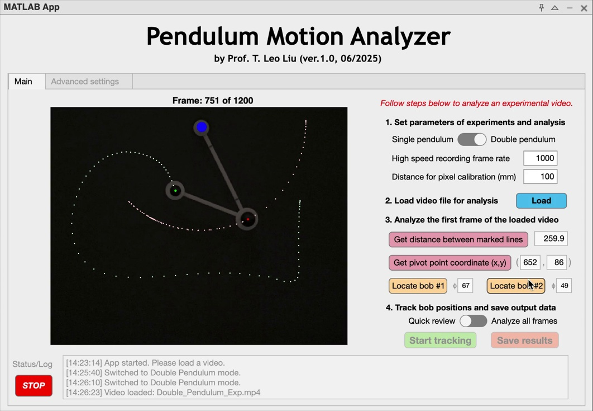

Fall 2026 · Lecture 03
Single pendulum
and Pre-Lab 2
A 50-minute preparation for Lab 2: model the pendulum, understand finite-angle behavior, measure motion from video, and prepare the analysis plan.
Lecture slides
31 slides with a 50-minute teaching sequence, expanded pendulum physics, a practical FFT explanation, and an embedded Fourier-synthesis video
Pre-Lab 2
Provided code and required calculations, predictions, figures, and explanations
Lecture sequence
| Time | Topic | Question students should answer |
|---|---|---|
| 0-14 min | Physical model, restoring torque, small-angle approximation, and energy | Why does a large release have a longer period? |
| 14-25 min | Camera, calibration, and tracking workflow | How do image coordinates become a signed angle? |
| 25-43 min | Frame rate, angular velocity, period, and FFT | Which measurement settings control time and frequency results? |
| 43-47 min | Pre-Lab 2 and trial plan | What evidence will the group collect for every initial-angle range? |
| 47-50 min | Laboratory checklist | What must be saved and recorded before leaving? |

The point marker must follow the bob center before the group accepts a full tracked analysis.